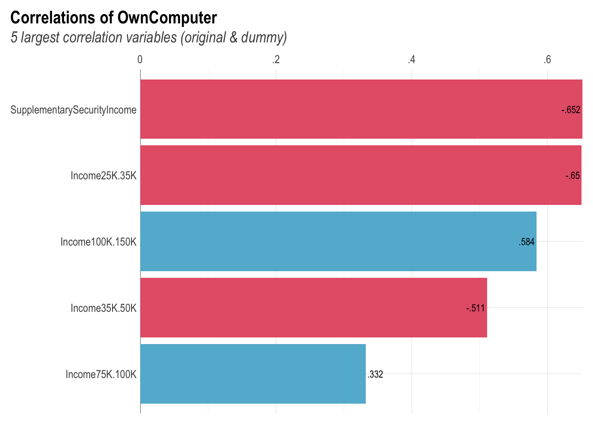
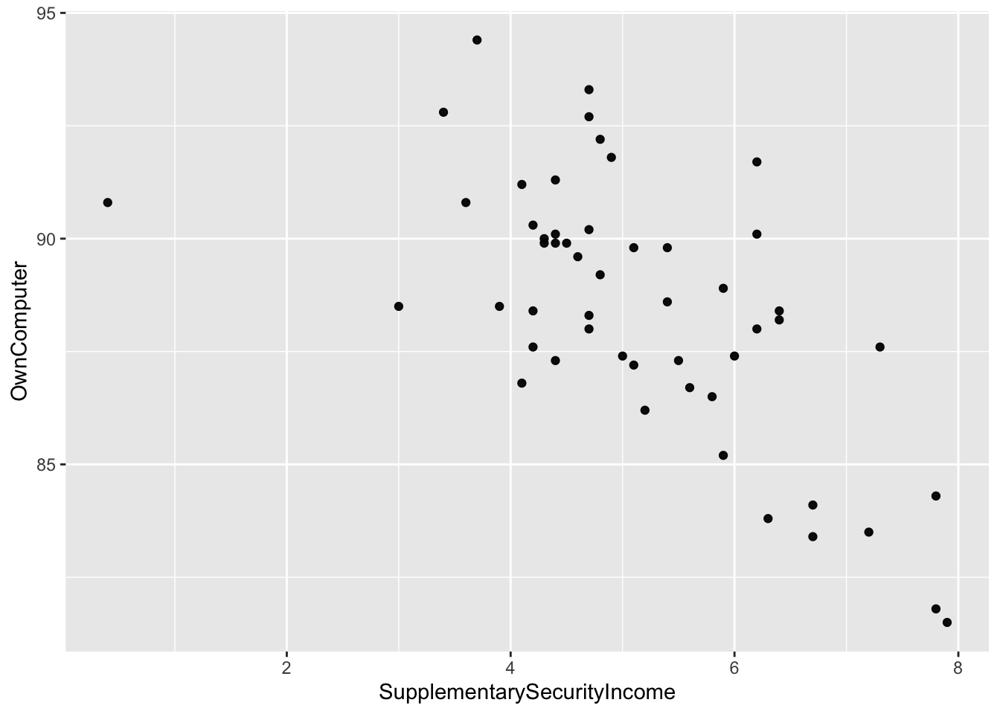
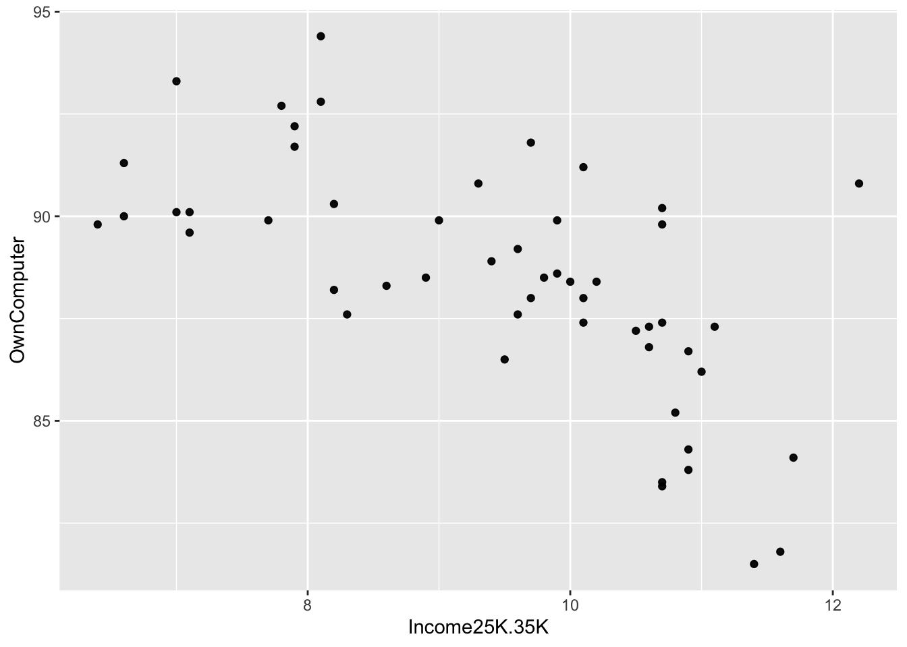
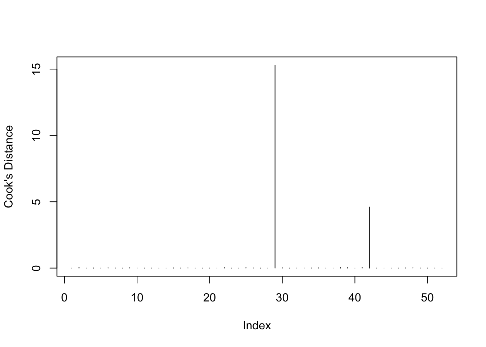
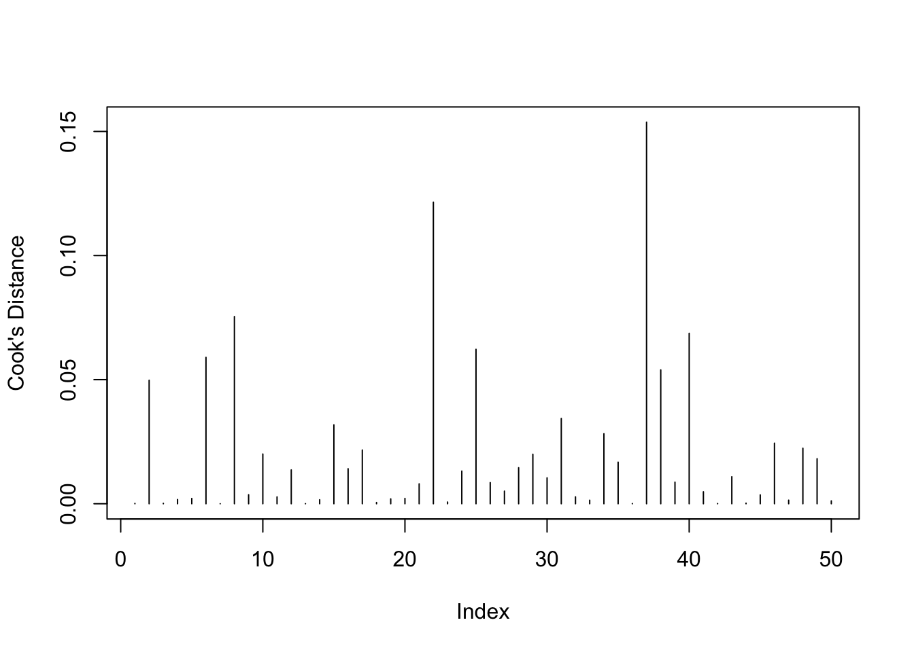
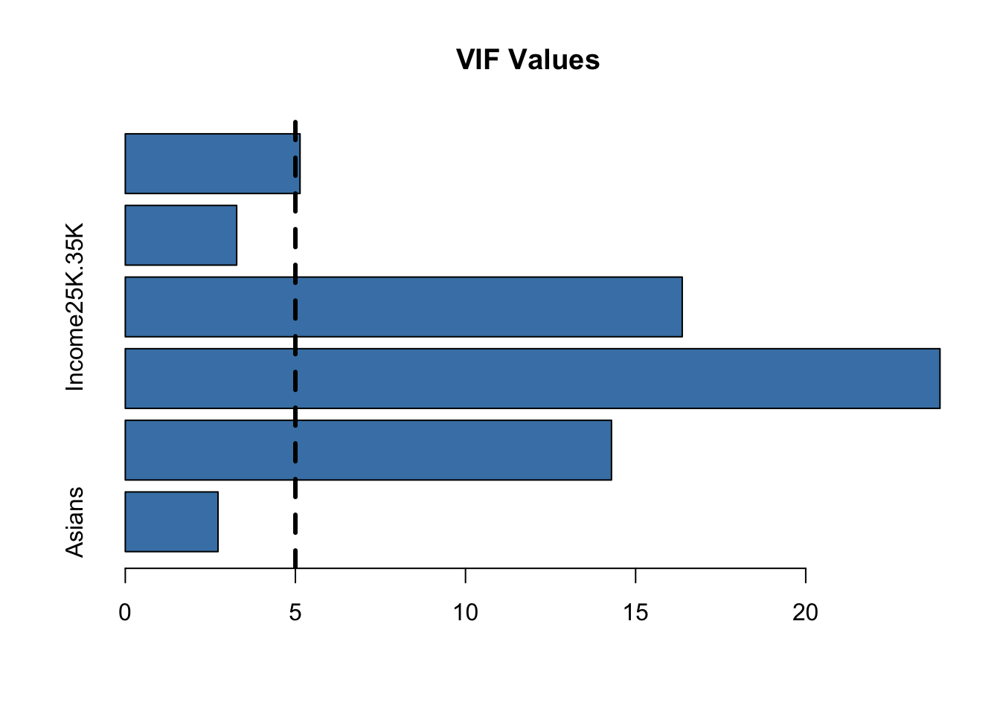

ADTA 5410 by Levent Bulut, Week 2 Lab
General Instructions
Please note that this Quarto document constitutes 10% of your weekly R Lab assignment grade. The remaining 90% of your grade is determined by your answers to questions in Canvas. Be sure to read each question in Canvas carefully and provide complete and accurate answers.
You can create a new folder for this lab assignment and store this Quarto document and the provided data set in the same folder you just created.
The first code chunk installs certain R packages that might be useful to answer some of the questions.
Unless instructed otherwise, you can choose any R package you want to answer the questions. You are not limited to using the packages listed in this Quarto template.
Be sure to include the code that produces each answer, and make sure that your code and output are visible in your knitted HTML document.
When you are finished, knit your Quarto document to an HTML document and save it in the folder you created in step 2.
Submit your assignment by answering each question in Canvas and uploading the knitted HTML document to the designated course portal in Canvas before the due date and time.
Brief information to help you write your codes for each question
In this lab assignment, you will first conduct exploratory data analysis, then use multiple linear regression method to predict your variable of interest. Also, you will check the model assumptions, check for outliers and influential factors, and finally do predictions.
We have state level census data on various socio-economic and demographic data called mydata. The data consists of the following variables:
mydata<-read.csv("Data_RLab2.csv", head=T)
names(mydata) [1] "State" "OwnComputer"
[3] "CommutePublicTransport" "TotalPopulation"
[5] "MedianAge" "WithCashAssistanceIncome"
[7] "MeanSocialSecurityIcnome" "SupplementarySecurityIncome"
[9] "WhiteOnly" "Latinos"
[11] "Asians" "AfricanAmerican"
[13] "Income100K.150K" "Income75K.100K"
[15] "Income50K.75K" "Income35K.50K"
[17] "Income25K.35K" "PovertyRate" glimpse(mydata)Rows: 52
Columns: 18
$ State <chr> "Minnesota", "Mississippi", "Missouri", "M…
$ OwnComputer <dbl> 90.3, 81.5, 87.3, 87.3, 88.5, 91.2, 92.2, …
$ CommutePublicTransport <dbl> 198984.888, 8966.286, 85260.868, 8333.856,…
$ TotalPopulation <int> 5527358, 2988762, 6090062, 1041732, 190476…
$ MedianAge <dbl> 37.9, 37.2, 38.5, 39.8, 36.4, 37.9, 42.7, …
$ WithCashAssistanceIncome <dbl> 3.4, 2.2, 1.9, 2.2, 1.9, 3.0, 2.5, 2.1, 2.…
$ MeanSocialSecurityIcnome <int> 20192, 17667, 19054, 18696, 19673, 19141, …
$ SupplementarySecurityIncome <dbl> 4.2, 7.9, 5.5, 4.4, 3.9, 4.1, 4.8, 4.4, 6.…
$ WhiteOnly <dbl> 80.3, 56.8, 79.6, 86.3, 79.4, 49.9, 90.4, …
$ Latinos <dbl> 0.1, 0.1, 0.1, 0.1, 0.3, 1.0, 0.2, 1.0, 0.…
$ Asians <dbl> 1.2, 1.2, 2.5, 1.3, 2.9, 10.1, 3.4, 10.2, …
$ AfricanAmerican <dbl> 7.4, 38.4, 12.8, 1.0, 5.9, 10.6, 2.2, 14.8…
$ Income100K.150K <dbl> 17.2, 10.4, 13.0, 12.6, 15.1, 14.1, 18.5, …
$ Income75K.100K <dbl> 14.0, 11.2, 12.5, 12.2, 13.7, 13.4, 14.0, …
$ Income50K.75K <dbl> 18.0, 16.9, 18.6, 19.1, 19.3, 19.1, 17.5, …
$ Income35K.50K <dbl> 12.1, 14.1, 14.4, 14.4, 13.8, 14.1, 10.9, …
$ Income25K.35K <dbl> 8.2, 11.4, 10.6, 11.1, 9.8, 10.1, 7.9, 7.1…
$ PovertyRate <dbl> 10.1, 20.8, 14.2, 13.7, 11.6, 13.7, 7.9, 1…is.na(mydata) %>% colSums() State OwnComputer
0 0
CommutePublicTransport TotalPopulation
0 0
MedianAge WithCashAssistanceIncome
0 0
MeanSocialSecurityIcnome SupplementarySecurityIncome
0 0
WhiteOnly Latinos
0 0
Asians AfricanAmerican
0 0
Income100K.150K Income75K.100K
0 0
Income50K.75K Income35K.50K
0 0
Income25K.35K PovertyRate
0 0 - There are 52 observations and 18variables in the data. Some variables are presented in percentage points as a fraction of the total population. Below is a snapshot of our data.
| State | OwnComputer | CommutePublicTransport | TotalPopulation | MedianAge | WithCashAssistanceIncome | MeanSocialSecurityIcnome | SupplementarySecurityIncome | WhiteOnly | Latinos | Asians | AfricanAmerican | Income100K.150K | Income75K.100K | Income50K.75K | Income35K.50K | Income25K.35K | PovertyRate |
|---|---|---|---|---|---|---|---|---|---|---|---|---|---|---|---|---|---|
| Minnesota | 90.3 | 198984.888 | 5527358 | 37.9 | 3.4 | 20192 | 4.2 | 80.3 | 0.1 | 1.2 | 7.4 | 17.2 | 14.0 | 18.0 | 12.1 | 8.2 | 10.1 |
| Mississippi | 81.5 | 8966.286 | 2988762 | 37.2 | 2.2 | 17667 | 7.9 | 56.8 | 0.1 | 1.2 | 38.4 | 10.4 | 11.2 | 16.9 | 14.1 | 11.4 | 20.8 |
| Missouri | 87.3 | 85260.868 | 6090062 | 38.5 | 1.9 | 19054 | 5.5 | 79.6 | 0.1 | 2.5 | 12.8 | 13.0 | 12.5 | 18.6 | 14.4 | 10.6 | 14.2 |
| Montana | 87.3 | 8333.856 | 1041732 | 39.8 | 2.2 | 18696 | 4.4 | 86.3 | 0.1 | 1.3 | 1.0 | 12.6 | 12.2 | 19.1 | 14.4 | 11.1 | 13.7 |
| Nebraska | 88.5 | 13333.320 | 1904760 | 36.4 | 1.9 | 19673 | 3.9 | 79.4 | 0.3 | 2.9 | 5.9 | 15.1 | 13.7 | 19.3 | 13.8 | 9.8 | 11.6 |
| Nevada | 91.2 | 99376.866 | 2922849 | 37.9 | 3.0 | 19141 | 4.1 | 49.9 | 1.0 | 10.1 | 10.6 | 14.1 | 13.4 | 19.1 | 14.1 | 10.1 | 13.7 |
Our target variable is OwnComputer, the percentage of people who own a computer. It may not be an interesting question, yet, in this lab assignment, we will try to find the factors that determine our target variable.
model1 will be fit to mydata and it has the following predictors: Asians, PovertyRate, and Income100K.150K
\(Model~~ 1: OwnComputer = \beta_{0}+\beta_{1}Asians+\beta_{2}PovertyRate+\beta_{3}Income100K.150K +\epsilon\)
Cook’s distance is a commonly used measure to identify influential points that have a large impact on the regression model. In this lab assignment, use a threshold Cook’s Distance of 1 to identify the row numbers of any outlier and enter your answers in Canvas.
Filter out the two observations in mydata that have a Cook’s Distance greater than 1, and create a new dataset named mydata1a that excludes these outliers.
model1a will be fit to mydata1a and it has the following predictors: Asians, PovertyRate, and Income100K.150K
model2 will be fit to mydata1a and it has the following predictors: Asians, PovertyRate, Income100K.150K, Income25K.35K, SupplementarySecurityIncome, and WhiteOnly.
\(Model ~~2: OwnComputer=\beta_{0}+\beta_{1}Asians+\beta_{2}{PovertyRate}+\beta_{3}Income100K.150K +\beta_{4}Income25K.35K+\beta_{5}SupplementarySecurityIncome+\beta_{6}WhiteOnly+\epsilon\)
Multicollinearity occurs when two or more independent variables in a regression model are highly correlated, which can result in unstable and unreliable estimates of the regression coefficients. We can check for multicollinearity by calculating the variance inflation factor (VIF). Any VIF value above 10 can be considered as an evidence of multi-collinearity.
To construct model3, we exclude all predictors from model2 that have a VIF value greater than 10.
If you come across any instructions in this QMD file or a question in Canvas that you find confusing or unclear, please post your related questions in the ‘Week 2 Questions in here!’ discussion forum.
Your code for Question 1
#cor(mydata$Asians, mydata$OwnComputer, method = "pearson")
#cor(mydata$PovertyRate, mydata$OwnComputer, method = "pearson")
#cor(mydata$Income100K.150K, mydata$OwnComputer, method = "pearson")
# Matrix
# mydata.cor = cor(mydata[,2:18], method = c("spearman"))
# round(mydata.cor, 2)
# ggcorr(mydata)
mydata_numeric <- mydata %>% select(-State)
#mydata_numeric
# Raw Correlation matrix
mydata %>% select(-State) %>% cor() -> mydata_correl
#mydata_correl
# Vector Correlation matrix
OwnComputer_cors <- mydata_correl[,1]
#OwnComputer_cors
# Correlation with Lares Library
corr_var(mydata_numeric,
OwnComputer, top=5)
# GGPLOT Visualizations
mydata_numeric %>% ggplot(aes(x = SupplementarySecurityIncome,
y = OwnComputer)) + geom_point()
mydata_numeric %>% ggplot(aes(x = Income25K.35K,
y = OwnComputer)) + geom_point()
#ggcorr(mydata_correl)Your code for Question 2
\(Model~~ 1: OwnComputer = \beta_{0}+\beta_{1}Asians+\beta_{2}PovertyRate+\beta_{3}Income100K.150K +\epsilon\)
#fit regression model
model1 <- lm(OwnComputer~Asians + PovertyRate + Income100K.150K, data=mydata_numeric)
#calculate residual standard error
sqrt(deviance(model1)/df.residual(model1))[1] 2.145931summary(model1)
Call:
lm(formula = OwnComputer ~ Asians + PovertyRate + Income100K.150K,
data = mydata_numeric)
Residuals:
Min 1Q Median 3Q Max
-4.6545 -1.0858 -0.0344 1.0583 4.3388
Coefficients:
Estimate Std. Error t value Pr(>|t|)
(Intercept) 64.17600 4.92178 13.039 < 2e-16 ***
Asians -0.03232 0.04379 -0.738 0.4641
PovertyRate 0.42075 0.12223 3.442 0.0012 **
Income100K.150K 1.27555 0.23524 5.422 1.89e-06 ***
---
Signif. codes: 0 '***' 0.001 '**' 0.01 '*' 0.05 '.' 0.1 ' ' 1
Residual standard error: 2.146 on 48 degrees of freedom
Multiple R-squared: 0.4721, Adjusted R-squared: 0.4391
F-statistic: 14.31 on 3 and 48 DF, p-value: 8.663e-07Your code for Question 3
summary(model1)
Call:
lm(formula = OwnComputer ~ Asians + PovertyRate + Income100K.150K,
data = mydata_numeric)
Residuals:
Min 1Q Median 3Q Max
-4.6545 -1.0858 -0.0344 1.0583 4.3388
Coefficients:
Estimate Std. Error t value Pr(>|t|)
(Intercept) 64.17600 4.92178 13.039 < 2e-16 ***
Asians -0.03232 0.04379 -0.738 0.4641
PovertyRate 0.42075 0.12223 3.442 0.0012 **
Income100K.150K 1.27555 0.23524 5.422 1.89e-06 ***
---
Signif. codes: 0 '***' 0.001 '**' 0.01 '*' 0.05 '.' 0.1 ' ' 1
Residual standard error: 2.146 on 48 degrees of freedom
Multiple R-squared: 0.4721, Adjusted R-squared: 0.4391
F-statistic: 14.31 on 3 and 48 DF, p-value: 8.663e-07Your code for Question 4
Model_Cook<-cooks.distance(model1)
plot(Model_Cook,type="h", ylab="Cook's Distance" )
influential <-as.numeric(names(Model_Cook)[(Model_Cook>1)])
influential[1] 29 42Your code for Question 5
#fit regression model
mydata1a <- mydata_numeric[-influential,]
dim(mydata_numeric)[1] 52 17dim(mydata1a )[1] 50 17model1a <- lm(OwnComputer~Asians + PovertyRate + Income100K.150K, data=mydata1a)
#calculate residual standard error
sqrt(deviance(model1a)/df.residual(model1a))[1] 1.571069Your code for Question 6
# model1 - Adjusted R-squared: 0.44
# model1a - Adjusted R-squared: 0.7055
summary(model1)
Call:
lm(formula = OwnComputer ~ Asians + PovertyRate + Income100K.150K,
data = mydata_numeric)
Residuals:
Min 1Q Median 3Q Max
-4.6545 -1.0858 -0.0344 1.0583 4.3388
Coefficients:
Estimate Std. Error t value Pr(>|t|)
(Intercept) 64.17600 4.92178 13.039 < 2e-16 ***
Asians -0.03232 0.04379 -0.738 0.4641
PovertyRate 0.42075 0.12223 3.442 0.0012 **
Income100K.150K 1.27555 0.23524 5.422 1.89e-06 ***
---
Signif. codes: 0 '***' 0.001 '**' 0.01 '*' 0.05 '.' 0.1 ' ' 1
Residual standard error: 2.146 on 48 degrees of freedom
Multiple R-squared: 0.4721, Adjusted R-squared: 0.4391
F-statistic: 14.31 on 3 and 48 DF, p-value: 8.663e-07summary(model1a)
Call:
lm(formula = OwnComputer ~ Asians + PovertyRate + Income100K.150K,
data = mydata1a)
Residuals:
Min 1Q Median 3Q Max
-2.5527 -1.2783 -0.1263 0.7324 3.5709
Coefficients:
Estimate Std. Error t value Pr(>|t|)
(Intercept) 87.10517 5.00593 17.400 <2e-16 ***
Asians 0.24710 0.09073 2.724 0.0091 **
PovertyRate -0.41406 0.15584 -2.657 0.0108 *
Income100K.150K 0.40618 0.22052 1.842 0.0719 .
---
Signif. codes: 0 '***' 0.001 '**' 0.01 '*' 0.05 '.' 0.1 ' ' 1
Residual standard error: 1.571 on 46 degrees of freedom
Multiple R-squared: 0.7236, Adjusted R-squared: 0.7055
F-statistic: 40.14 on 3 and 46 DF, p-value: 6.759e-13# Running Cooks again
Model_Cook<-cooks.distance(model1a)
plot(Model_Cook,type="h", ylab="Cook's Distance" )
influential <-as.numeric(names(Model_Cook)[(Model_Cook>1)])
influentialnumeric(0)Your code for Question 7
- \(Model ~~2: OwnComputer=\beta_{0}+\beta_{1}Asians+\beta_{2}{PovertyRate}+\beta_{3}Income100K.150K +\beta_{4}Income25K.35K+\beta_{5}SupplementarySecurityIncome+\beta_{6}WhiteOnly+\epsilon\)
#fit regression model
model2 <- lm(OwnComputer~Asians + PovertyRate + Income100K.150K + Income25K.35K + SupplementarySecurityIncome + WhiteOnly, data=mydata1a)
summary(model2)
Call:
lm(formula = OwnComputer ~ Asians + PovertyRate + Income100K.150K +
Income25K.35K + SupplementarySecurityIncome + WhiteOnly,
data = mydata1a)
Residuals:
Min 1Q Median 3Q Max
-2.66806 -1.00154 -0.01902 0.59293 2.93675
Coefficients:
Estimate Std. Error t value Pr(>|t|)
(Intercept) 76.423639 12.744798 5.996 3.7e-07 ***
Asians 0.295970 0.106085 2.790 0.00783 **
PovertyRate -0.024397 0.257830 -0.095 0.92505
Income100K.150K 0.780048 0.421143 1.852 0.07087 .
Income25K.35K 0.403698 0.557218 0.724 0.47269
SupplementarySecurityIncome -0.888772 0.302438 -2.939 0.00528 **
WhiteOnly 0.007306 0.030155 0.242 0.80972
---
Signif. codes: 0 '***' 0.001 '**' 0.01 '*' 0.05 '.' 0.1 ' ' 1
Residual standard error: 1.388 on 43 degrees of freedom
Multiple R-squared: 0.7984, Adjusted R-squared: 0.7702
F-statistic: 28.38 on 6 and 43 DF, p-value: 1.924e-13Your code for Question 8
library(car)
vif(model2) Asians PovertyRate
2.725824 14.291210
Income100K.150K Income25K.35K
23.946871 16.370464
SupplementarySecurityIncome WhiteOnly
3.274392 5.136633 #create vector of VIF values
vif_values <- vif(model2)
#create horizontal bar chart to display each VIF value
barplot(vif_values, main = "VIF Values", horiz = TRUE, col = "steelblue")
#add vertical line at 5
abline(v = 5, lwd = 3, lty = 2)
Your code for Question 9
#fit regression model
model3 <- lm(OwnComputer~Asians + SupplementarySecurityIncome + WhiteOnly, data=mydata1a)
summary(model3)
Call:
lm(formula = OwnComputer ~ Asians + SupplementarySecurityIncome +
WhiteOnly, data = mydata1a)
Residuals:
Min 1Q Median 3Q Max
-2.5913 -1.2602 -0.2678 1.2015 3.8231
Coefficients:
Estimate Std. Error t value Pr(>|t|)
(Intercept) 91.02986 2.04135 44.593 < 2e-16 ***
Asians 0.54319 0.09169 5.924 3.76e-07 ***
SupplementarySecurityIncome -1.46027 0.19816 -7.369 2.56e-09 ***
WhiteOnly 0.03948 0.01884 2.096 0.0417 *
---
Signif. codes: 0 '***' 0.001 '**' 0.01 '*' 0.05 '.' 0.1 ' ' 1
Residual standard error: 1.61 on 46 degrees of freedom
Multiple R-squared: 0.7098, Adjusted R-squared: 0.6909
F-statistic: 37.5 on 3 and 46 DF, p-value: 2.051e-12Your code for Question 10
#summary(model1) # Adjusted R-squared: 0.4391
#summary(model1a) # Adjusted R-squared: 0.7055
# summary(model2) # Adjusted R-squared: 0.7702
summary(model3) # Adjusted R-squared: 0.6909
Call:
lm(formula = OwnComputer ~ Asians + SupplementarySecurityIncome +
WhiteOnly, data = mydata1a)
Residuals:
Min 1Q Median 3Q Max
-2.5913 -1.2602 -0.2678 1.2015 3.8231
Coefficients:
Estimate Std. Error t value Pr(>|t|)
(Intercept) 91.02986 2.04135 44.593 < 2e-16 ***
Asians 0.54319 0.09169 5.924 3.76e-07 ***
SupplementarySecurityIncome -1.46027 0.19816 -7.369 2.56e-09 ***
WhiteOnly 0.03948 0.01884 2.096 0.0417 *
---
Signif. codes: 0 '***' 0.001 '**' 0.01 '*' 0.05 '.' 0.1 ' ' 1
Residual standard error: 1.61 on 46 degrees of freedom
Multiple R-squared: 0.7098, Adjusted R-squared: 0.6909
F-statistic: 37.5 on 3 and 46 DF, p-value: 2.051e-12Your code for Question 11
Consider the following scenario: Canada held a referendum to become the 51st state of the United States, and the US accepted their request with pleasure.”
Use model2 to predict the OwnComputer ratio in Canada with a 90% prediction interval.
Hypothetical Data for Canada:
Asians: 18.4
PovertyRate: 5.8
Income100K.150K: 23
Income25K.35K: 13
SupplementarySecurityIncome: 9
WhiteOnly: 75
Canada <- data.frame(Asians=18.4, PovertyRate=5.8, Income100K.150K=23, Income25K.35K=13, SupplementarySecurityIncome=9, WhiteOnly=75)
#fit regression model
modelCanada <- lm(OwnComputer ~ Asians + PovertyRate + Income100K.150K + Income25K.35K + SupplementarySecurityIncome + WhiteOnly, data=mydata1a)
predict.lm(modelCanada, Canada ,interval="prediction", level = 0.90) fit lwr upr
1 97.46618 87.73019 107.2022dim(mydata)[1] 52 18dim(mydata_numeric)[1] 52 17